Quickstart: Deploy your Vertex AI Studio prompt as a web application¶
Preview
This feature is subject to the "Pre-GA Offerings Terms" in the General Service Terms section of the Service Specific Terms. Pre-GA features are available "as is" and might have limited support. For more information, see the launch stage descriptions.
In Vertex AI Studio, you can design and iterate on your prompts and compare results from different configurations and models. Once you finish engineering your prompt, you can deploy it as a web application to share with your collaborators or target users. The web application is hosted on Cloud Run and is available outside the Google Cloud console.
In this quickstart, you will:
- Create a prompt with prompt variables.
- Deploy your prompt as a web application.
- Monitor deployment progress and test the deployed application.
- Update and re-deploy your prompt.
- Test prompt submission with multimodal support.
📚 Before you start¶
If you have never used Vertex AI Studio before, you can follow the Vertex AI Studio quickstart guide or take the Google Cloud Skills Boost course to learn the basics.
Before proceeding with this guide, ensure you have the following:
- A Google Cloud project with billing enabled.
- The Vertex AI API enabled.
📚 Additional permissions required¶
In addition to the existing permissions for using Vertex AI Studio, you need the following permissions to deploy your prompt as a web application.
| Action | Required permissions | Purpose |
|---|---|---|
| Enable additional APIs | serviceusage.services.enable |
Enable the following APIs:
|
| Grant permissions to service accounts | resourcemanager.projects.setIamPolicy |
Grant the Compute Engine default service account the following roles:
|
| Deploy specific permissions | storage.buckets.createrun.services.createartifactregistry.repositories.createrun.services.setIamPolicy |
During deployment, source code is uploaded to Cloud Storage and then deployed to a new Cloud Run service. The artifactregistry.repositories.create permission is required to create a repository for the container image. The run.services.setIamPolicy permission is required to make the service publicly accessible. |
If you are the owner of your project, you can follow the guides in Vertex AI Studio without taking additional actions. If you are not the project owner, ask your project administrator to perform the first two actions and then grant you the Editor (roles/editor) and Cloud Run Admin (roles/run.admin) roles.
⚙️ Deploy and test your prompt¶
Step 1: Create a prompt with prompt variables
- Navigate to the create prompt page in Vertex AI Studio.
- Click data_object Add variable in the prompt input box.
-
In the Manage prompt variables dialog, enter a variable name, provide a default value, and click Apply.
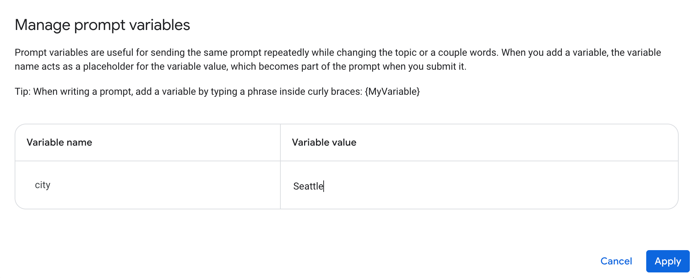
-
In the prompt input box, compose a prompt using the variable you created. You can also adjust other parameters, such as enabling Grounding with Google Search and adding system instructions like "Always get current weather from the web".
Step 2: Deploy your prompt as a web application
-
Click the Build with code button in the top right corner, then select Deploy as app.
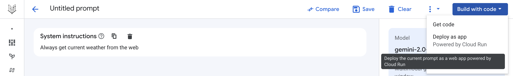
-
Save the prompt: A prompt must be saved before it can be deployed. If prompted, save your prompt. The deployment dialog will open automatically after the prompt is saved.
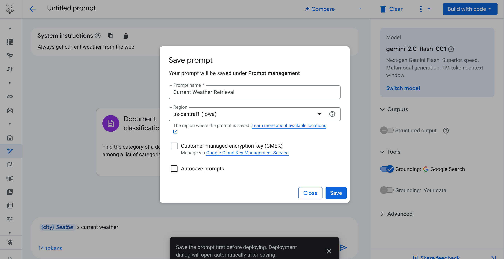
Note: Saving your prompt in a region for the first time can take 2-3 minutes. A warning box will appear after 1 minute. This is an expected one-time operation. Subsequent saves in the same project and region will take only a few seconds.
-
Enable APIs and grant permissions: If this is your first deployment, you will be prompted to enable the required APIs. Click Enable required APIs.
-
After the APIs are enabled, the Create a web app dialog appears. Since access control is not supported in Public Preview, all deployed applications will have public access. Do not include sensitive or personally identifiable information (PII) in your prompt.
-
Check the I understand this app will be deployed publicly checkbox and click Create app.
-
If this is your first deployment, another dialog will ask you to grant the required roles to the service account. Click Grant all to proceed.
Note: If you don't have the necessary permissions, ask your project administrator for assistance. See the additional permissions required section for details.
-
Deployment starts: Vertex AI Studio packages the source code for the web application into a zip file, uploads it to a Cloud Storage bucket, and begins the deployment. The Manage web app dialog will appear, showing information about your deployment.
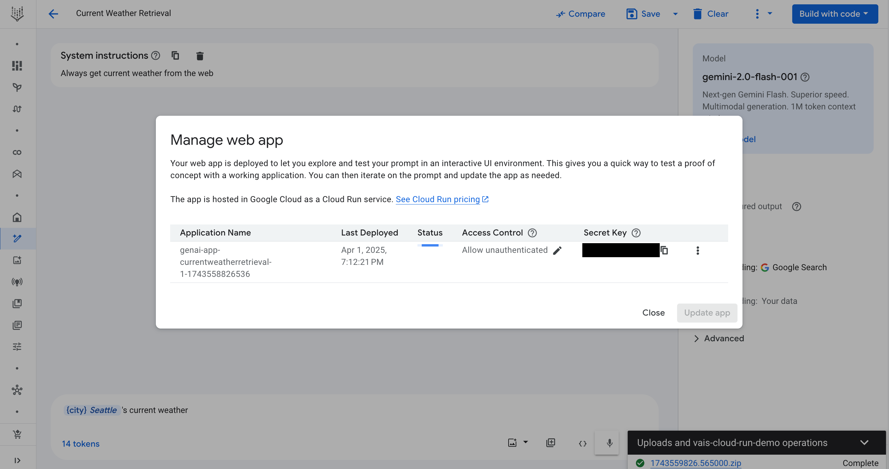
Step 3: Monitor deployment and test the application
Deployment typically takes 2-3 minutes. You can monitor the progress in the Status column of the Manage web app dialog.
-
Monitor from the dialog: If you close the dialog, you can reopen it from the menu under the Build with code button. Once deployment is complete, the status changes to Ready, and an Open button appears.
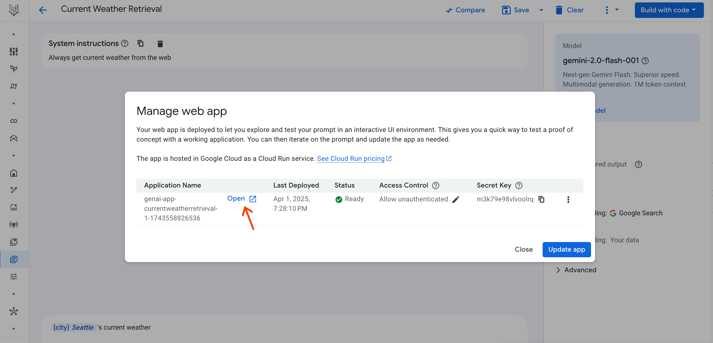
-
Monitor from notifications: You can also monitor the status from the Notifications menu (bell icon). The icon will show a green circle when deployment is successful. Clicking the notification redirects you to the Cloud Run page.
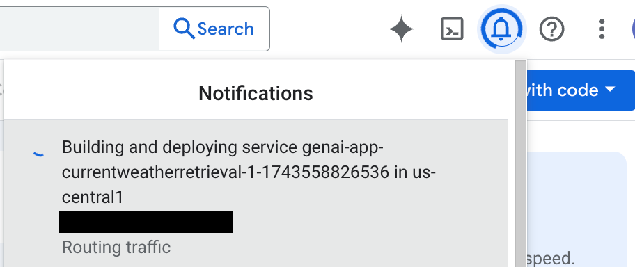
Access control and secret key
Your web application is deployed with Allow unauthenticated access enabled. To provide basic protection, the application requires a secret key in the URL. You can find this key in the Secret Key column of the Manage web app dialog. When you open the app from Vertex AI Studio, the key is automatically appended.
Open and test the application
-
Click Open in the Manage web app dialog. The application will open in a new tab with the secret key appended to the URL (e.g.,
?key=SECRET_KEY).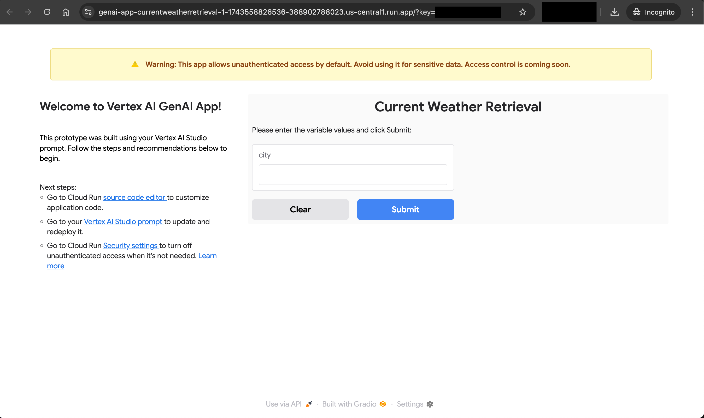
-
Enter a value for the prompt variable and click Submit. The results will appear on the right.
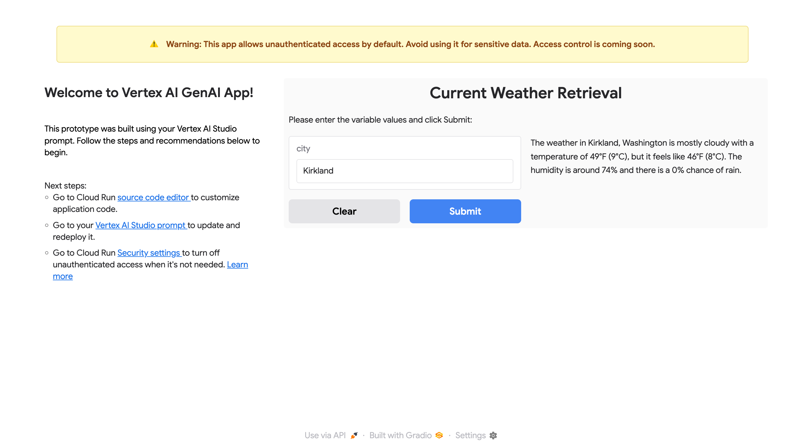
Note: Cloud Run is serverless, so the application container may shut down during inactivity. If the app is slow to load or a submission fails, refreshing the page usually resolves the issue.
Step 4: Update and re-deploy your prompt
- Edit your prompt in Vertex AI Studio. For example, you can turn the prompt into a conversation.
- Click the Build with code button and select Manage app to open the Manage web app dialog.
- Click Update app to re-deploy your application with the updated prompt.
- A confirmation dialog will appear, warning you that re-deploying will overwrite any changes made directly in Cloud Run. Click Confirm to proceed.
- Monitor the update process in the Manage web app dialog, similar to the initial deployment.
-
Once the update is complete, open the web application. You will see the updated UI, such as a conversation interface.
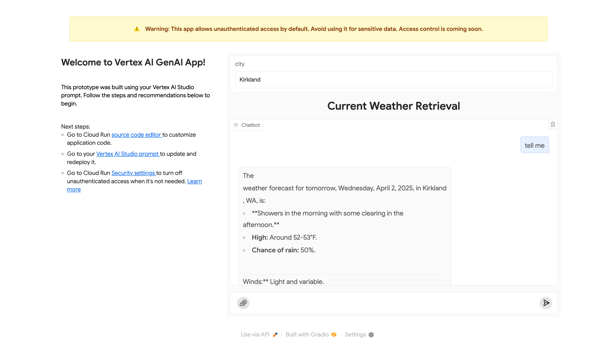
Step 5: Test multimodal content
You can insert inputs like images, videos, audio, and documents into the conversation UI. The supported input types depend on the model selected for the prompt. For details, see the documentation for multimodal support for each model.
-
To insert a file, click the clip icon button in the conversation input box.
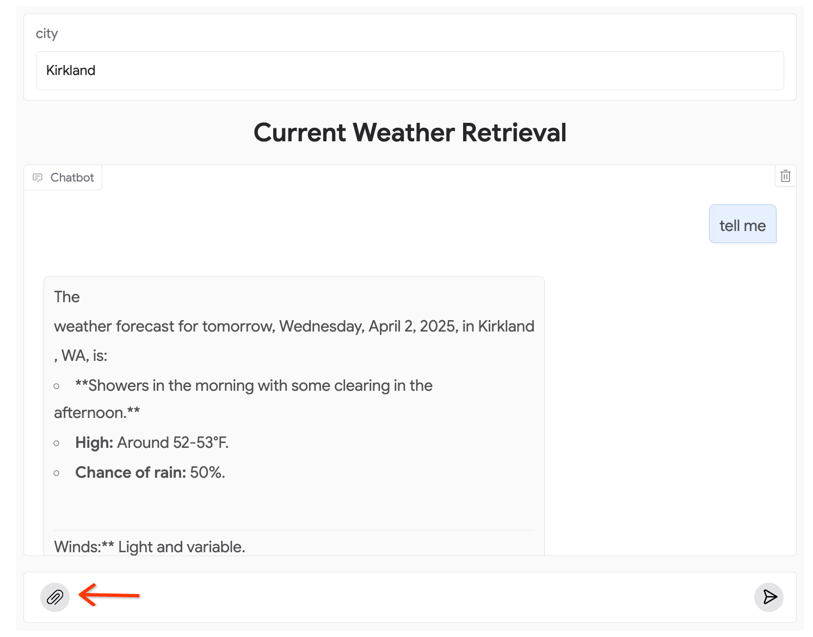
-
After providing the input, you can interact with the model about it.
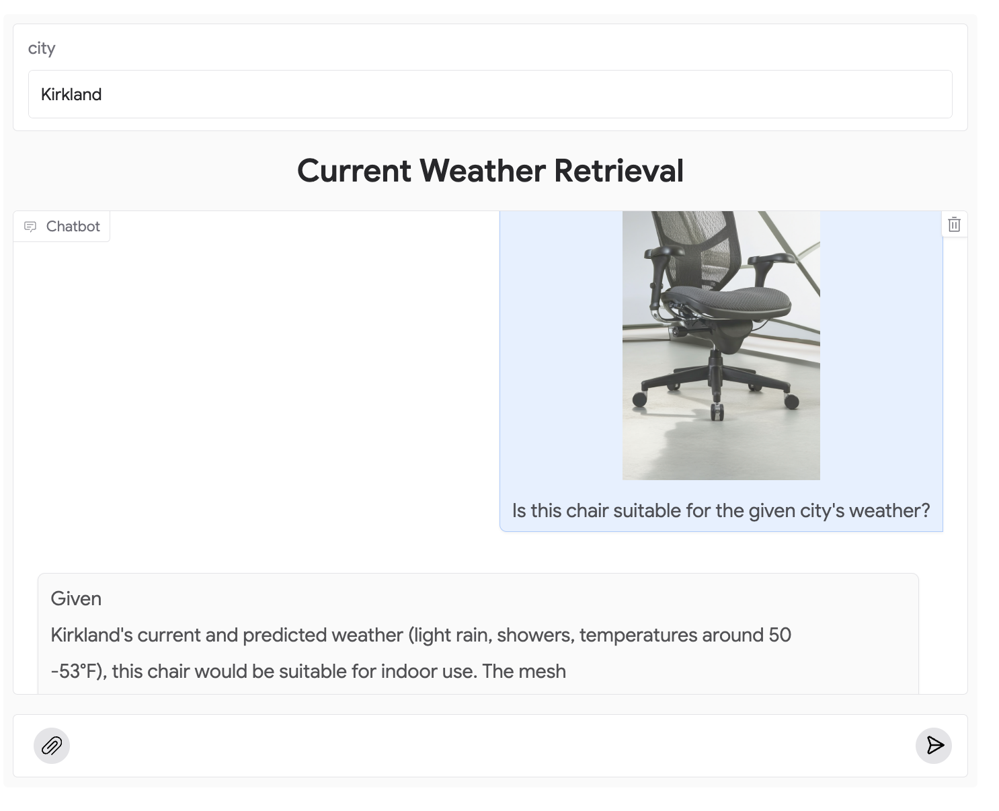
⚙️ Manage your deployed application¶
Once you are familiar with the deployment process, you can perform the following advanced actions.
Edit source code in Cloud Run
If you want to customize the web application beyond the prompt, you can edit its source code directly in Cloud Run.
-
Open the Manage web app dialog, click the more_vert more icon at the end of the row, and select Source code.
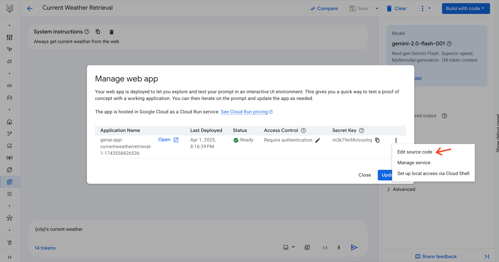
-
In the Cloud Run source code page, click Edit source.
- After making your changes, click Save and redeploy.
Note: Re-deploying from Vertex AI Studio will overwrite any changes made in Cloud Run. To save a version of your custom code, click Download ZIP before re-deploying from Vertex AI Studio.
Manage public access
You can control whether your web application is publicly accessible from the Cloud Run security settings.
- In the Manage Web App dialog, click the edit pencil icon in the Access Control column. This opens the Cloud Run security page.
- Select Require authentication and click Save.
- Your web application will no longer be publicly accessible and will show an Error: Forbidden page if accessed via its URL.
- Navigate to the Cloud Run security page for your service.
- Select Allow unauthenticated invocations and click Save.
For more details, see Authentication in Cloud Run.
Set up local access for development
If you have turned off public access, you can access the web application by setting up a local proxy using gcloud commands.
- Open Cloud Shell by clicking the terminal icon in the top right corner of the Google Cloud console and authorize it if prompted.
-
In the Manage web app dialog, click the more_vert more icon and select Set up local access via Cloud Shell.

-
A command will be pasted into your Cloud Shell. Press Enter to run it.
-
Once the command is running, click the preview link provided in the Cloud Shell output to access your application locally. This link only works while the
gcloudcommand is active.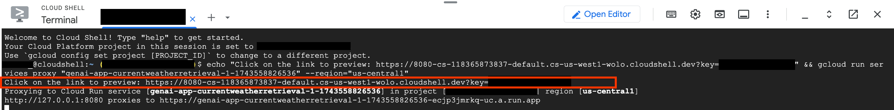
📚 Troubleshooting common issues¶
Authentication error: No secret key
Error: You see a message indicating that the secret key is missing.
Solution: This error occurs when the ?key=SECRET_KEY parameter is missing from the URL. Open the web application from the Manage web app dialog in Vertex AI Studio, which automatically appends the correct key.
Authentication error: Invalid secret key
Error: You see a message indicating that the secret key is invalid.
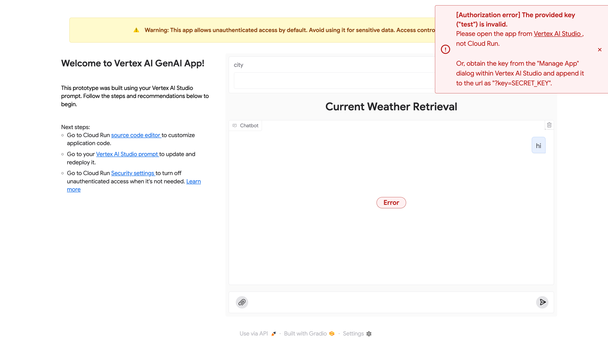
Solution: The secret key is unique to each prompt. Ensure you are using the correct key for the specific application. Open the application again from the Manage web app dialog to use the correct URL.
400 Invalid argument: empty input
Error: A 400 error message appears when you submit a prompt with variables but the chat input is empty.
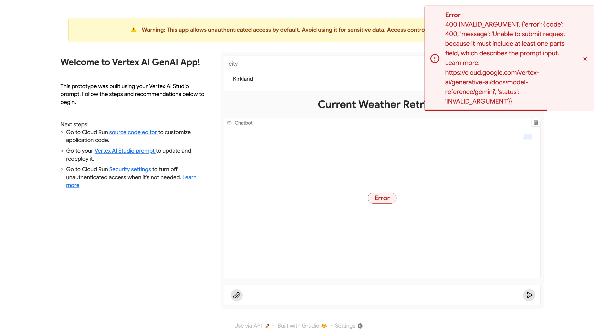
Solution: Type any non-empty text into the chat input box and resubmit.
400 Invalid argument: mimeType is not supported
Error: A 400 error occurs if you upload a file type that the model does not support.
Solution: This is expected behavior. Use a file type that is supported by the selected model. See the documentation for multimodal support for each model for a list of supported types.
📚 Related Questions¶
I've created a prompt in Vertex AI Studio. How can I share it with my team for testing without giving them access to the Google Cloud console?
You can deploy your prompt as a web application. In Vertex AI Studio, once your prompt is ready, click Build with code and select Deploy as app. This feature packages your prompt into a web app hosted on Cloud Run, making it accessible via a URL outside of the Google Cloud console. You can then share this URL with your collaborators for testing.
I'm not a Project Owner and I'm having trouble deploying my prompt as a web app. What permissions do I need?
To deploy a prompt as a web app, you need more than the standard Vertex AI Studio permissions. Ask your project administrator to grant your user account the Editor (roles/editor) and Cloud Run Admin (roles/run.admin) roles. Your administrator may also need to perform one-time actions like enabling the Cloud Run, Artifact Registry, Cloud Build, and Cloud Logging APIs.
My deployed web app is publicly accessible by default. How can I make it private, and how would I test it then?
You can restrict public access directly in the Cloud Run settings. From the Manage web app dialog in Vertex AI Studio, click the pencil icon in the Access Control column to open the Cloud Run security page. There, you can select Require authentication.
To test the private application, you can set up a local proxy. In the Manage web app dialog, click the more_vert icon, select Set up local access via Cloud Shell, and run the provided command in your terminal. This will generate a local preview link that works as long as the command is active in Cloud Shell.
I want to customize the UI of my deployed web app. If I edit the source code in Cloud Run, will my changes be saved if I update the prompt later in Vertex AI Studio?
No, your changes will be overwritten. While you can edit the web application's source code directly in Cloud Run, redeploying an updated prompt from Vertex AI Studio will overwrite any customizations you've made. To preserve your work, it is recommended that you download a ZIP file of your custom code from the Cloud Run editor before redeploying from Vertex AI Studio.
My web app is showing an 'Authentication error: No secret key'. What does this mean and how do I fix it?
This error indicates that the required secret key is missing from the application's URL. Each deployed app is protected by a unique key. To fix this, either open the application directly from the Manage web app dialog in Vertex AI Studio (which appends the key automatically) or manually copy the key from the Secret Key column in the same dialog and append it to the URL in the format ?key=SECRET_KEY.
🔗 What's next¶
- Explore more features in the Vertex AI Studio documentation or the Introduction to Vertex AI Studio Google Cloud Skills Boost course.
- Learn about pricing for Cloud Run.
- Understand authentication in Cloud Run.